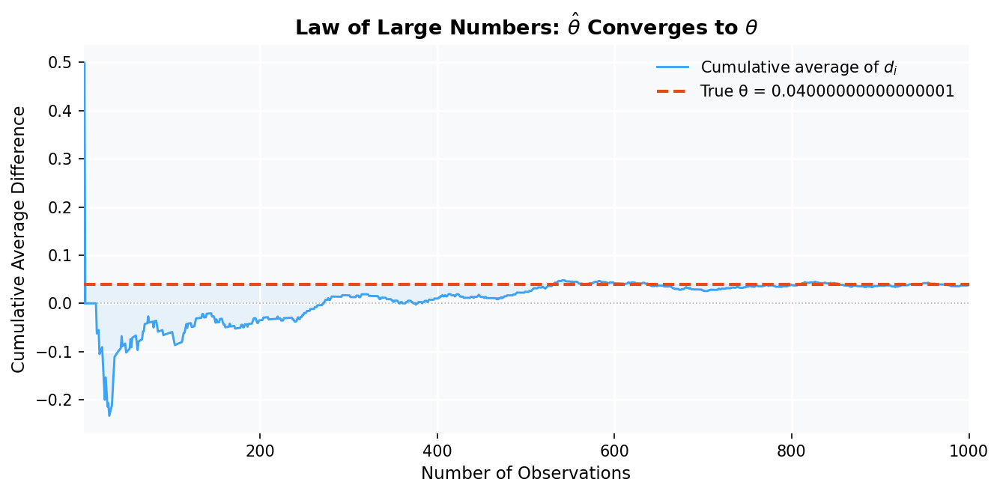
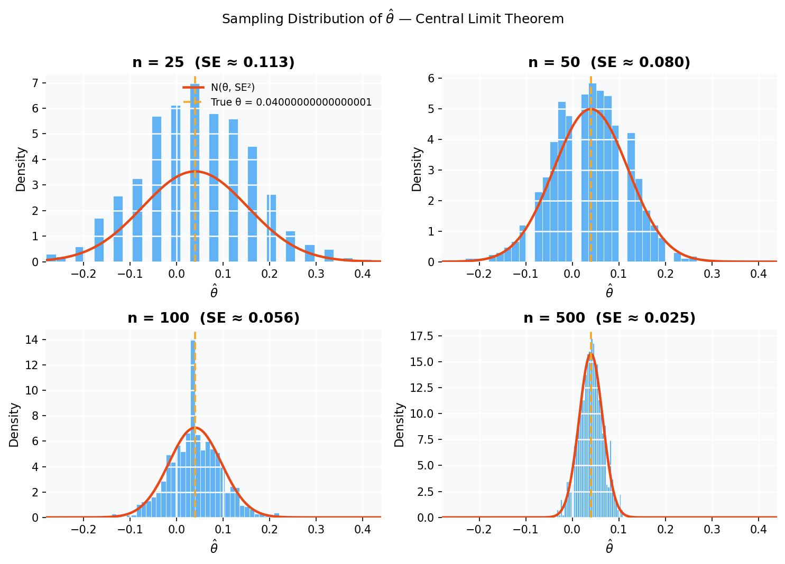
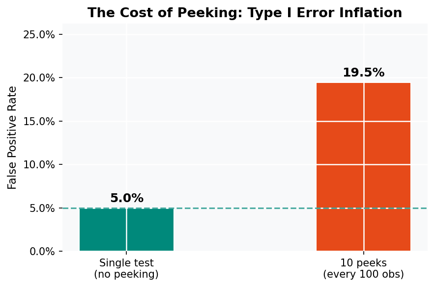

Code
np.random.seed(42)
pi_A = 0.22
pi_B = 0.18
n = 1000
data_A = np.random.binomial(1, pi_A, n)
data_B = np.random.binomial(1, pi_B, n)
theta_true = pi_A - pi_B # 0.04Simulating Key Ideas from Classical Frequentist Statistics
Dakota V.
April 14, 2025
You’ve built a product you believe in, and somewhere on your homepage sits a small rectangle with a few words asking visitors to sign up for your newsletter. Those few words matter more than you might expect.
We wanted to know whether a direct, action-oriented call to action outperforms a benefit-framing one. Our two candidates:
To find out, we ran an A/B test: visitors were randomly assigned to see exactly one of the two CTAs, and we tracked whether each visitor signed up. Random assignment is the key ingredient — it ensures the two groups are comparable on every dimension we didn’t measure, so any difference in sign-up rates can be attributed to the CTA itself rather than to some confounding variable like time of day or traffic source.
This post walks through the classical frequentist toolkit for analyzing that kind of experiment — from simulating data, through the Law of Large Numbers and the Central Limit Theorem, all the way to hypothesis testing, regression, and a cautionary tale about peeking at results early.
Each visitor either signs up or doesn’t, a binary outcome we can model as a draw from a Bernoulli distribution. If a visitor is assigned to CTA A, their outcome \(X_i^A\) follows:
\[X_i^A \sim \text{Bernoulli}(\pi_A)\]
where \(\pi_A\) is the true (unknown) probability that a visitor who sees CTA A signs up. Similarly, CTA B visitors follow \(\text{Bernoulli}(\pi_B)\).
The quantity we care about is the treatment effect:
\[\theta = \pi_A - \pi_B\]
A positive \(\theta\) means CTA A drives more sign-ups; a negative \(\theta\) means CTA B wins; \(\theta = 0\) means neither CTA is better.
We estimate \(\theta\) with the difference in sample means:
\[\hat{\theta} = \bar{X}_A - \bar{X}_B\]
Because each observation is 0 or 1, the sample mean is just the proportion of sign-ups in each group: \(\bar{X}_A = \hat{\pi}_A\) and \(\bar{X}_B = \hat{\pi}_B\). The rest of this post is about understanding the statistical behavior of this estimator.
In a real experiment we wouldn’t know the true values of \(\pi_A\) and \(\pi_B\) — discovering them is precisely the point. But for the purpose of this walkthrough, we’ll set them ourselves so we can study how our estimator behaves when we know the truth.
We’ll suppose \(\pi_A = 0.22\) and \(\pi_B = 0.18\), giving a true treatment effect of \(\theta = 0.04\). We’ll simulate 1,000 visitors per group — 2,000 total.
With the data in hand, our point estimate is:
True θ: 0.0400
Estimated θ̂: 0.0380Not bad — the estimate lands close to the truth after just 1,000 observations per group. But why does this work? That’s the Law of Large Numbers.
The Law of Large Numbers (LLN) tells us that as the number of observations grows, the sample mean converges to the population mean. Mathematically, for i.i.d. draws \(X_1, X_2, \ldots\):
\[\bar{X}_n = \frac{1}{n}\sum_{i=1}^n X_i \xrightarrow{\,p\,} \mathbb{E}[X] \quad \text{as } n \to \infty\]
This is what gives us confidence in \(\hat{\theta}\). With enough data, \(\bar{X}_A \to \pi_A\) and \(\bar{X}_B \to \pi_B\), so \(\hat{\theta} \to \theta\). The LLN is the bedrock justification for the whole enterprise of statistical estimation.
To see it in action, we compute the element-wise differences \(d_i = X_i^A - X_i^B\) and track the running (cumulative) average as observations accumulate.
diff = data_A - data_B
cum_avg = np.cumsum(diff) / np.arange(1, n + 1)
obs_idx = np.arange(1, n + 1)
fig, ax = plt.subplots(figsize=(9, 4.5))
ax.plot(obs_idx, cum_avg, color=BLUE, lw=1.4, alpha=0.85, label="Cumulative average of $d_i$")
ax.axhline(theta_true, color=CORAL, lw=2, linestyle="--", label=f"True θ = {theta_true}")
ax.axhline(0, color="gray", lw=0.8, linestyle=":", alpha=0.6)
ax.fill_between(obs_idx, cum_avg, theta_true, alpha=0.08, color=BLUE)
ax.set_xlabel("Number of Observations")
ax.set_ylabel("Cumulative Average Difference")
ax.set_title("Law of Large Numbers: $\\hat{\\theta}$ Converges to $\\theta$")
ax.legend(frameon=False)
ax.set_xlim(1, n)
plt.tight_layout()
plt.savefig("thumbnail.png", dpi=150, bbox_inches="tight")
plt.show()
The pattern is exactly what the LLN predicts. With only a handful of observations the running average bounces around erratically — a few early sign-ups or no-shows can send it far from the truth. As the sample grows the noise averages out, and by the time we hit a few hundred observations the line has clearly anchored near 0.04. This is why larger samples give us better estimates: not by magic, but because randomness cancels itself out over many draws.
Knowing that \(\hat{\theta}\) is close to \(\theta\) isn’t quite enough — we also want to know how close. A point estimate without a measure of uncertainty is like a weather forecast without a confidence interval. Enter the bootstrap.
The bootstrap is a resampling technique for estimating the variability of a statistic when no simple closed-form formula exists (or when you’d rather not rely on distributional assumptions). The idea is disarmingly simple: treat the sample you have as a stand-in for the population, and repeatedly draw new samples from it (with replacement) to see how much your estimate varies.
For comparison, there is a closed-form standard error for the difference in means of two independent Bernoulli samples:
\[SE(\hat{\theta}) = \sqrt{\frac{\hat{\pi}_A(1 - \hat{\pi}_A)}{n_A} + \frac{\hat{\pi}_B(1 - \hat{\pi}_B)}{n_B}}\]
| Bootstrap vs. Analytical Standard Error | |||
|---|---|---|---|
| Method | Standard Error | 95% CI (lower) | 95% CI (upper) |
| Bootstrap (1,000 resamples) | 0.01764 | 0.0040 | 0.0730 |
| Analytical formula | 0.01777 | 0.0032 | 0.0728 |
The two standard errors agree closely — within rounding error — which is reassuring. The bootstrap can recover the correct answer without ever deriving the formula; it “discovers” the variability empirically from the data itself.
The 95% confidence interval tells us that, given our sample, values of \(\theta\) between roughly 0.004 and 0.073 are consistent with what we observed. The interval does not include zero, which is already a hint that the two CTAs differ — something we’ll formalize in the hypothesis testing section.
The bootstrap told us the standard error; the Central Limit Theorem tells us the shape of the sampling distribution. The CLT states that regardless of the distribution of the underlying data, the sampling distribution of the sample mean becomes approximately Normal as \(n\) grows:
\[\sqrt{n}(\bar{X}_n - \mu) \xrightarrow{d} \mathcal{N}(0, \sigma^2)\]
For our estimator, this means \(\hat{\theta} = \bar{X}_A - \bar{X}_B\) is approximately Normal for large \(n\), regardless of the fact that the individual observations are Bernoulli (0 or 1) rather than Normal. The approximate normality of \(\hat{\theta}\) is exactly what will let us compute p-values and critical values in the next section.
The four panels below show what happens to the sampling distribution of \(\hat{\theta}\) as \(n\) grows — each histogram summarizes 1,000 independent simulated experiments.
sample_sizes = [25, 50, 100, 500]
n_sims = 1_000
rng2 = np.random.default_rng(99)
fig, axes = plt.subplots(2, 2, figsize=(10, 7))
axes = axes.flatten()
# Compute a common x range first
all_ests = []
for n_s in sample_sizes:
ests = [
rng2.binomial(1, pi_A, n_s).mean() - rng2.binomial(1, pi_B, n_s).mean()
for _ in range(n_sims)
]
all_ests.append(np.array(ests))
x_min = min(e.min() for e in all_ests)
x_max = max(e.max() for e in all_ests)
for i, (n_s, ests) in enumerate(zip(sample_sizes, all_ests)):
ax = axes[i]
se_s = np.sqrt(pi_A*(1-pi_A)/n_s + pi_B*(1-pi_B)/n_s)
ax.hist(ests, bins=35, color=BLUE, alpha=0.70, density=True,
edgecolor="white", linewidth=0.5)
# Normal overlay
xg = np.linspace(x_min, x_max, 300)
ax.plot(xg, stats.norm.pdf(xg, theta_true, se_s),
color=CORAL, lw=2.2, label="N(θ, SE²)")
ax.axvline(theta_true, color=GOLD, lw=1.8, linestyle="--", label=f"True θ = {theta_true}")
ax.set_xlim(x_min, x_max)
ax.set_title(f"n = {n_s} (SE ≈ {se_s:.3f})")
ax.set_xlabel("$\\hat{\\theta}$")
ax.set_ylabel("Density")
if i == 0:
ax.legend(frameon=False, fontsize=9)
fig.suptitle("Sampling Distribution of $\\hat{\\theta}$ — Central Limit Theorem", y=1.01)
plt.tight_layout()
plt.show()
At \(n = 25\), the histogram is lumpy and discrete — the Bernoulli nature of the data dominates. By \(n = 100\) the Normal overlay is already a reasonable description, and by \(n = 500\) the fit is nearly exact. Note also how the spread of the distribution shrinks as \(n\) grows: the standard error falls like \(1/\sqrt{n}\), so quadrupling the sample halves the uncertainty.
We’ve seen that \(\hat{\theta}\) converges to \(\theta\) and that its sampling distribution is approximately Normal. That’s enough scaffolding to run a formal hypothesis test.
We set up two competing hypotheses:
\[H_0: \theta = 0 \quad \text{(the CTAs perform equally)}\] \[H_1: \theta \neq 0 \quad \text{(one CTA is better)}\]
The null hypothesis is the skeptic’s position: maybe what we’re seeing is just random noise. Our job is to assess whether the data are too extreme to be explained by chance alone.
To do that, we compute a test statistic by standardizing \(\hat{\theta}\) under \(H_0\):
\[z = \frac{\hat{\theta} - 0}{SE(\hat{\theta})}\]
Why standardize? By the CLT, \(\hat{\theta}\) is approximately Normal with mean \(\theta\) and standard deviation \(SE(\hat{\theta})\). Under \(H_0\), \(\theta = 0\), so dividing by the standard deviation gives a standard Normal: \(z \;\dot{\sim}\; \mathcal{N}(0, 1)\). We now know the distribution of our test statistic under the null, which is exactly what we need to compute a p-value — the probability of observing a test statistic at least as extreme as ours if \(H_0\) were true.
A quick note on nomenclature: this procedure is often called a “t-test” in software output, but that label is technically reserved for cases where the data are Normally distributed and we estimate the variance — the ratio then follows an exact \(t\)-distribution. Our data are Bernoulli, not Normal, so we rely on the CLT for approximate Normality and our procedure is properly a z-test. For large samples the \(t\) and \(z\) distributions are nearly indistinguishable, so the practical difference is negligible, but it’s worth knowing why.
θ̂ = 0.0380
SE(θ̂) = 0.0178
z = 2.139
p-value = 0.0325| Hypothesis Test Results | |
|---|---|
| H₀: θ = 0 vs. H₁: θ ≠ 0 | |
| Quantity | Value |
| Estimated effect (θ̂) | 0.0380 |
| Standard error | 0.0178 |
| z-statistic | 2.139 |
| p-value (two-sided) | 0.0325 |
With a p-value of 0.0325, we have strong evidence against \(H_0\) at the conventional \(\alpha = 0.05\) threshold. In other words: if the two CTAs truly performed identically, observing a difference this large (or larger) by chance would happen only about 3.2 percent of the time. That’s unlikely enough for us to conclude the difference is real.
Here’s a fact that surprises many practitioners: the two-sample test we just ran is mathematically equivalent to a simple linear regression. Understanding this equivalence is useful because the regression framework generalizes gracefully to more complex designs — multiple treatments, covariates, interactions — while producing identical inference in the simple case.
The setup: stack the CTA A and CTA B outcomes into a single column \(Y_i\), and create an indicator variable \(D_i\) that equals 1 if visitor \(i\) saw CTA A and 0 if they saw CTA B. Then fit:
\[Y_i = \beta_0 + \beta_1 D_i + \varepsilon_i\]
The OLS coefficients have clean interpretations:
| OLS Regression: Y ~ D | ||||
|---|---|---|---|---|
| Y = sign-up indicator, D = CTA A indicator | ||||
| Term | Estimate | Std. Error | t-stat | p-value |
| Intercept (β₀) | 0.1780 | 0.0126 | 14.161 | 0.0000 |
| CTA A indicator (β₁) | 0.0380 | 0.0178 | 2.138 | 0.0327 |
The coefficient on \(D\) is 0.0380 — identical to our earlier \(\hat{\theta}\). The t-statistic (2.138) is very close to the z-statistic from the previous section; any small discrepancy comes from the fact that OLS uses a pooled variance estimate while our z-test used separate group variances.
Once you frame the A/B test as a regression, it’s easy to extend: add pre-experiment covariates to reduce variance (CUPED), interact \(D\) with user segments to estimate heterogeneous treatment effects, or add additional treatment arms as extra indicators. The same smf.ols call handles all of it.
Imagine your boss checks the experiment dashboard every morning and, the moment the p-value dips below 0.05, declares a winner and stops the test. This practice — called peeking — is one of the most common mistakes in online experimentation, and it inflates the false positive rate far beyond the nominal 5%.
Here’s the intuition. A single test at \(\alpha = 0.05\) has a 5% chance of a false positive (rejecting \(H_0\) when it’s actually true). But running 10 sequential tests on growing data gives you 10 chances to get lucky. Even if none of the individual tests has a large false positive probability, the combined probability of at least one false alarm is much higher than 5%.
Let’s quantify this with a simulation. We set up a world where \(H_0\) is true — both CTAs have identical sign-up rates of 20% — and simulate 10,000 experiments. In each experiment we peek after every 100 visitors per group (10 peeks total) and flag the experiment as a false positive if any peek yields \(p < 0.05\).
n_experiments = 10_000
peek_points = np.arange(100, 1001, 100) # 100, 200, ..., 1000
pi_null = 0.20
rng3 = np.random.default_rng(2024)
false_positives = 0
for _ in range(n_experiments):
a_full = rng3.binomial(1, pi_null, 1000)
b_full = rng3.binomial(1, pi_null, 1000)
for peek_n in peek_points:
a_sub, b_sub = a_full[:peek_n], b_full[:peek_n]
p_hat_a, p_hat_b = a_sub.mean(), b_sub.mean()
diff_sub = p_hat_a - p_hat_b
se_sub = np.sqrt(
p_hat_a*(1-p_hat_a)/peek_n + p_hat_b*(1-p_hat_b)/peek_n
)
if se_sub == 0:
continue
z_sub = diff_sub / se_sub
p_sub = 2 * (1 - stats.norm.cdf(abs(z_sub)))
if p_sub < 0.05:
false_positives += 1
break # stop peeking once we declare a winner
empirical_fpr = false_positives / n_experiments
The empirical false positive rate under peeking is 19.5% — more than four times the nominal 5%. In practical terms: if the null is true and you run 100 A/B tests with this peeking protocol, you’ll wrongly declare a winner in about 19 of them instead of 5.
The fix isn’t to never look at your data — it’s to use a testing procedure that accounts for multiple looks. Sequential testing methods (like alpha-spending functions or always-valid p-values) are designed exactly for this setting, maintaining the desired error rate no matter how many times you peek. But that’s a topic for another post.
All code is available in the repository. Simulations use numpy.random.default_rng with fixed seeds for reproducibility.
---
title: "A/B Testing a Call to Action"
subtitle: "Simulating Key Ideas from Classical Frequentist Statistics"
author: "Dakota V."
date: "2025-04-14"
categories: [statistics, A/B testing, python, simulation]
image: "thumbnail.png"
---
```{python}
#| echo: false
import numpy as np
import pandas as pd
import matplotlib.pyplot as plt
import matplotlib.ticker as mticker
import seaborn as sns
from scipy import stats
import statsmodels.formula.api as smf
import warnings
warnings.filterwarnings("ignore")
# Global style
plt.rcParams.update({
"figure.facecolor": "white",
"axes.facecolor": "#f8f9fa",
"axes.grid": True,
"grid.color": "white",
"grid.linewidth": 1.2,
"axes.spines.top": False,
"axes.spines.right": False,
"axes.spines.left": False,
"axes.spines.bottom": False,
"font.family": "sans-serif",
"axes.labelsize": 11,
"axes.titlesize": 13,
"axes.titleweight": "bold",
})
BLUE = "#2196F3"
CORAL = "#E64A19"
TEAL = "#00897B"
GOLD = "#F9A825"
```
## Introduction
You've built a product you believe in, and somewhere on your homepage sits a small rectangle with a few words asking visitors to sign up for your newsletter. Those few words matter more than you might expect.
We wanted to know whether a direct, action-oriented call to action outperforms a benefit-framing one. Our two candidates:
- **CTA A** — *"Sign up for our newsletter here!"*
- **CTA B** — *"Stay up to date by signing up!"*
To find out, we ran an **A/B test**: visitors were randomly assigned to see exactly one of the two CTAs, and we tracked whether each visitor signed up. Random assignment is the key ingredient — it ensures the two groups are comparable on every dimension we didn't measure, so any difference in sign-up rates can be attributed to the CTA itself rather than to some confounding variable like time of day or traffic source.
This post walks through the classical frequentist toolkit for analyzing that kind of experiment — from simulating data, through the Law of Large Numbers and the Central Limit Theorem, all the way to hypothesis testing, regression, and a cautionary tale about peeking at results early.
## The A/B Test as a Statistical Problem
Each visitor either signs up or doesn't, a binary outcome we can model as a draw from a **Bernoulli distribution**. If a visitor is assigned to CTA A, their outcome $X_i^A$ follows:
$$X_i^A \sim \text{Bernoulli}(\pi_A)$$
where $\pi_A$ is the true (unknown) probability that a visitor who sees CTA A signs up. Similarly, CTA B visitors follow $\text{Bernoulli}(\pi_B)$.
The quantity we care about is the **treatment effect**:
$$\theta = \pi_A - \pi_B$$
A positive $\theta$ means CTA A drives more sign-ups; a negative $\theta$ means CTA B wins; $\theta = 0$ means neither CTA is better.
We estimate $\theta$ with the **difference in sample means**:
$$\hat{\theta} = \bar{X}_A - \bar{X}_B$$
Because each observation is 0 or 1, the sample mean is just the proportion of sign-ups in each group: $\bar{X}_A = \hat{\pi}_A$ and $\bar{X}_B = \hat{\pi}_B$. The rest of this post is about understanding the statistical behavior of this estimator.
## Simulating Data
In a real experiment we wouldn't know the true values of $\pi_A$ and $\pi_B$ — discovering them is precisely the point. But for the purpose of this walkthrough, we'll set them ourselves so we can study how our estimator behaves when we know the truth.
We'll suppose $\pi_A = 0.22$ and $\pi_B = 0.18$, giving a true treatment effect of $\theta = 0.04$. We'll simulate 1,000 visitors per group — 2,000 total.
```{python}
#| echo: true
np.random.seed(42)
pi_A = 0.22
pi_B = 0.18
n = 1000
data_A = np.random.binomial(1, pi_A, n)
data_B = np.random.binomial(1, pi_B, n)
theta_true = pi_A - pi_B # 0.04
```
With the data in hand, our point estimate is:
```{python}
#| echo: true
theta_hat = data_A.mean() - data_B.mean()
print(f"True θ: {theta_true:.4f}")
print(f"Estimated θ̂: {theta_hat:.4f}")
```
Not bad — the estimate lands close to the truth after just 1,000 observations per group. But *why* does this work? That's the Law of Large Numbers.
## The Law of Large Numbers
The **Law of Large Numbers** (LLN) tells us that as the number of observations grows, the sample mean converges to the population mean. Mathematically, for i.i.d. draws $X_1, X_2, \ldots$:
$$\bar{X}_n = \frac{1}{n}\sum_{i=1}^n X_i \xrightarrow{\,p\,} \mathbb{E}[X] \quad \text{as } n \to \infty$$
This is what gives us confidence in $\hat{\theta}$. With enough data, $\bar{X}_A \to \pi_A$ and $\bar{X}_B \to \pi_B$, so $\hat{\theta} \to \theta$. The LLN is the bedrock justification for the whole enterprise of statistical estimation.
To see it in action, we compute the element-wise differences $d_i = X_i^A - X_i^B$ and track the running (cumulative) average as observations accumulate.
```{python}
#| echo: true
#| code-fold: true
#| label: fig-lln
#| fig-cap: "The cumulative average of the paired differences converges to the true θ = 0.04 as more observations accumulate. Early on the estimate is highly variable; by n = 1,000 it has settled close to the truth."
diff = data_A - data_B
cum_avg = np.cumsum(diff) / np.arange(1, n + 1)
obs_idx = np.arange(1, n + 1)
fig, ax = plt.subplots(figsize=(9, 4.5))
ax.plot(obs_idx, cum_avg, color=BLUE, lw=1.4, alpha=0.85, label="Cumulative average of $d_i$")
ax.axhline(theta_true, color=CORAL, lw=2, linestyle="--", label=f"True θ = {theta_true}")
ax.axhline(0, color="gray", lw=0.8, linestyle=":", alpha=0.6)
ax.fill_between(obs_idx, cum_avg, theta_true, alpha=0.08, color=BLUE)
ax.set_xlabel("Number of Observations")
ax.set_ylabel("Cumulative Average Difference")
ax.set_title("Law of Large Numbers: $\\hat{\\theta}$ Converges to $\\theta$")
ax.legend(frameon=False)
ax.set_xlim(1, n)
plt.tight_layout()
plt.savefig("thumbnail.png", dpi=150, bbox_inches="tight")
plt.show()
```
The pattern is exactly what the LLN predicts. With only a handful of observations the running average bounces around erratically — a few early sign-ups or no-shows can send it far from the truth. As the sample grows the noise averages out, and by the time we hit a few hundred observations the line has clearly anchored near 0.04. This is why larger samples give us better estimates: not by magic, but because randomness cancels itself out over many draws.
## Bootstrap Standard Errors
Knowing that $\hat{\theta}$ is *close* to $\theta$ isn't quite enough — we also want to know *how* close. A point estimate without a measure of uncertainty is like a weather forecast without a confidence interval. Enter the **bootstrap**.
The bootstrap is a resampling technique for estimating the variability of a statistic when no simple closed-form formula exists (or when you'd rather not rely on distributional assumptions). The idea is disarmingly simple: treat the sample you have as a stand-in for the population, and repeatedly draw new samples from it (with replacement) to see how much your estimate varies.
```{python}
#| echo: true
n_boot = 1_000
rng = np.random.default_rng(7)
boot_estimates = np.array([
rng.choice(data_A, size=n, replace=True).mean() -
rng.choice(data_B, size=n, replace=True).mean()
for _ in range(n_boot)
])
boot_se = boot_estimates.std()
ci_lo, ci_hi = np.percentile(boot_estimates, [2.5, 97.5])
```
For comparison, there is a closed-form standard error for the difference in means of two independent Bernoulli samples:
$$SE(\hat{\theta}) = \sqrt{\frac{\hat{\pi}_A(1 - \hat{\pi}_A)}{n_A} + \frac{\hat{\pi}_B(1 - \hat{\pi}_B)}{n_B}}$$
```{python}
#| echo: true
pi_hat_A = data_A.mean()
pi_hat_B = data_B.mean()
analytical_se = np.sqrt(
pi_hat_A * (1 - pi_hat_A) / n +
pi_hat_B * (1 - pi_hat_B) / n
)
```
```{python}
#| echo: false
from great_tables import GT, style, loc
results_df = pd.DataFrame({
"Method": ["Bootstrap (1,000 resamples)", "Analytical formula"],
"Standard Error": [f"{boot_se:.5f}", f"{analytical_se:.5f}"],
"95% CI (lower)": [f"{ci_lo:.4f}", f"{theta_hat - 1.96*analytical_se:.4f}"],
"95% CI (upper)": [f"{ci_hi:.4f}", f"{theta_hat + 1.96*analytical_se:.4f}"],
})
(
GT(results_df)
.tab_header(title="Bootstrap vs. Analytical Standard Error")
.tab_style(
style=style.text(weight="bold"),
locations=loc.column_labels()
)
)
```
The two standard errors agree closely — within rounding error — which is reassuring. The bootstrap can recover the correct answer without ever deriving the formula; it "discovers" the variability empirically from the data itself.
The 95% confidence interval tells us that, given our sample, values of $\theta$ between roughly `{python} f"{ci_lo:.3f}"` and `{python} f"{ci_hi:.3f}"` are consistent with what we observed. The interval does not include zero, which is already a hint that the two CTAs differ — something we'll formalize in the hypothesis testing section.
## The Central Limit Theorem
The bootstrap told us the standard error; the **Central Limit Theorem** tells us the *shape* of the sampling distribution. The CLT states that regardless of the distribution of the underlying data, the sampling distribution of the sample mean becomes approximately Normal as $n$ grows:
$$\sqrt{n}(\bar{X}_n - \mu) \xrightarrow{d} \mathcal{N}(0, \sigma^2)$$
For our estimator, this means $\hat{\theta} = \bar{X}_A - \bar{X}_B$ is approximately Normal for large $n$, regardless of the fact that the individual observations are Bernoulli (0 or 1) rather than Normal. The approximate normality of $\hat{\theta}$ is exactly what will let us compute p-values and critical values in the next section.
The four panels below show what happens to the sampling distribution of $\hat{\theta}$ as $n$ grows — each histogram summarizes 1,000 independent simulated experiments.
```{python}
#| echo: true
#| code-fold: true
#| label: fig-clt
#| fig-cap: "Sampling distribution of θ̂ at four sample sizes. At n = 25 the distribution is discrete and bumpy; by n = 500 it is smooth and clearly bell-shaped — the CLT in action."
#| fig-height: 7
sample_sizes = [25, 50, 100, 500]
n_sims = 1_000
rng2 = np.random.default_rng(99)
fig, axes = plt.subplots(2, 2, figsize=(10, 7))
axes = axes.flatten()
# Compute a common x range first
all_ests = []
for n_s in sample_sizes:
ests = [
rng2.binomial(1, pi_A, n_s).mean() - rng2.binomial(1, pi_B, n_s).mean()
for _ in range(n_sims)
]
all_ests.append(np.array(ests))
x_min = min(e.min() for e in all_ests)
x_max = max(e.max() for e in all_ests)
for i, (n_s, ests) in enumerate(zip(sample_sizes, all_ests)):
ax = axes[i]
se_s = np.sqrt(pi_A*(1-pi_A)/n_s + pi_B*(1-pi_B)/n_s)
ax.hist(ests, bins=35, color=BLUE, alpha=0.70, density=True,
edgecolor="white", linewidth=0.5)
# Normal overlay
xg = np.linspace(x_min, x_max, 300)
ax.plot(xg, stats.norm.pdf(xg, theta_true, se_s),
color=CORAL, lw=2.2, label="N(θ, SE²)")
ax.axvline(theta_true, color=GOLD, lw=1.8, linestyle="--", label=f"True θ = {theta_true}")
ax.set_xlim(x_min, x_max)
ax.set_title(f"n = {n_s} (SE ≈ {se_s:.3f})")
ax.set_xlabel("$\\hat{\\theta}$")
ax.set_ylabel("Density")
if i == 0:
ax.legend(frameon=False, fontsize=9)
fig.suptitle("Sampling Distribution of $\\hat{\\theta}$ — Central Limit Theorem", y=1.01)
plt.tight_layout()
plt.show()
```
At $n = 25$, the histogram is lumpy and discrete — the Bernoulli nature of the data dominates. By $n = 100$ the Normal overlay is already a reasonable description, and by $n = 500$ the fit is nearly exact. Note also how the spread of the distribution shrinks as $n$ grows: the standard error falls like $1/\sqrt{n}$, so quadrupling the sample halves the uncertainty.
## Hypothesis Testing
We've seen that $\hat{\theta}$ converges to $\theta$ and that its sampling distribution is approximately Normal. That's enough scaffolding to run a formal **hypothesis test**.
We set up two competing hypotheses:
$$H_0: \theta = 0 \quad \text{(the CTAs perform equally)}$$
$$H_1: \theta \neq 0 \quad \text{(one CTA is better)}$$
The null hypothesis is the skeptic's position: *maybe what we're seeing is just random noise*. Our job is to assess whether the data are too extreme to be explained by chance alone.
To do that, we compute a **test statistic** by standardizing $\hat{\theta}$ under $H_0$:
$$z = \frac{\hat{\theta} - 0}{SE(\hat{\theta})}$$
Why standardize? By the CLT, $\hat{\theta}$ is approximately Normal with mean $\theta$ and standard deviation $SE(\hat{\theta})$. Under $H_0$, $\theta = 0$, so dividing by the standard deviation gives a standard Normal: $z \;\dot{\sim}\; \mathcal{N}(0, 1)$. We now know the distribution of our test statistic under the null, which is exactly what we need to compute a **p-value** — the probability of observing a test statistic at least as extreme as ours if $H_0$ were true.
A quick note on nomenclature: this procedure is often called a "t-test" in software output, but that label is technically reserved for cases where the data are Normally distributed and we estimate the variance — the ratio then follows an exact $t$-distribution. Our data are Bernoulli, not Normal, so we rely on the CLT for approximate Normality and our procedure is properly a **z-test**. For large samples the $t$ and $z$ distributions are nearly indistinguishable, so the practical difference is negligible, but it's worth knowing *why*.
```{python}
#| echo: true
se = np.sqrt(pi_hat_A*(1-pi_hat_A)/n + pi_hat_B*(1-pi_hat_B)/n)
z_stat = theta_hat / se
p_value = 2 * (1 - stats.norm.cdf(abs(z_stat)))
print(f"θ̂ = {theta_hat:.4f}")
print(f"SE(θ̂) = {se:.4f}")
print(f"z = {z_stat:.3f}")
print(f"p-value = {p_value:.4f}")
```
```{python}
#| echo: false
ht_df = pd.DataFrame({
"Quantity": ["Estimated effect (θ̂)", "Standard error", "z-statistic", "p-value (two-sided)"],
"Value": [f"{theta_hat:.4f}", f"{se:.4f}", f"{z_stat:.3f}", f"{p_value:.4f}"],
})
(
GT(ht_df)
.tab_header(title="Hypothesis Test Results",
subtitle="H₀: θ = 0 vs. H₁: θ ≠ 0")
.tab_style(
style=style.text(weight="bold"),
locations=loc.column_labels()
)
)
```
With a p-value of `{python} f"{p_value:.4f}"`, we have strong evidence against $H_0$ at the conventional $\alpha = 0.05$ threshold. In other words: if the two CTAs truly performed identically, observing a difference this large (or larger) by chance would happen only about `{python} f"{p_value*100:.1f}"` percent of the time. That's unlikely enough for us to conclude the difference is real.
## The T-Test as a Regression
Here's a fact that surprises many practitioners: **the two-sample test we just ran is mathematically equivalent to a simple linear regression**. Understanding this equivalence is useful because the regression framework generalizes gracefully to more complex designs — multiple treatments, covariates, interactions — while producing identical inference in the simple case.
The setup: stack the CTA A and CTA B outcomes into a single column $Y_i$, and create an indicator variable $D_i$ that equals 1 if visitor $i$ saw CTA A and 0 if they saw CTA B. Then fit:
$$Y_i = \beta_0 + \beta_1 D_i + \varepsilon_i$$
The OLS coefficients have clean interpretations:
- $\hat{\beta}_0 = \bar{X}_B = \hat{\pi}_B$ — the expected sign-up rate when $D_i = 0$ (CTA B group)
- $\hat{\beta}_0 + \hat{\beta}_1 = \bar{X}_A = \hat{\pi}_A$ — the expected rate for CTA A
- $\hat{\beta}_1 = \hat{\pi}_A - \hat{\pi}_B = \hat{\theta}$ — the estimated treatment effect
```{python}
#| echo: true
df_reg = pd.DataFrame({
"Y": np.concatenate([data_A, data_B]),
"D": np.concatenate([np.ones(n, dtype=int), np.zeros(n, dtype=int)]),
})
model = smf.ols("Y ~ D", data=df_reg).fit()
```
```{python}
#| echo: false
reg_df = pd.DataFrame({
"Term": ["Intercept (β₀)", "CTA A indicator (β₁)"],
"Estimate": [f"{model.params['Intercept']:.4f}", f"{model.params['D']:.4f}"],
"Std. Error":[f"{model.bse['Intercept']:.4f}", f"{model.bse['D']:.4f}"],
"t-stat": [f"{model.tvalues['Intercept']:.3f}", f"{model.tvalues['D']:.3f}"],
"p-value": [f"{model.pvalues['Intercept']:.4f}", f"{model.pvalues['D']:.4f}"],
})
(
GT(reg_df)
.tab_header(title="OLS Regression: Y ~ D",
subtitle="Y = sign-up indicator, D = CTA A indicator")
.tab_style(
style=style.text(weight="bold"),
locations=loc.column_labels()
)
)
```
The coefficient on $D$ is `{python} f"{model.params['D']:.4f}"` — identical to our earlier $\hat{\theta}$. The t-statistic (`{python} f"{model.tvalues['D']:.3f}"`) is very close to the z-statistic from the previous section; any small discrepancy comes from the fact that OLS uses a pooled variance estimate while our z-test used separate group variances.
Once you frame the A/B test as a regression, it's easy to extend: add pre-experiment covariates to reduce variance (CUPED), interact $D$ with user segments to estimate heterogeneous treatment effects, or add additional treatment arms as extra indicators. The same `smf.ols` call handles all of it.
## The Problem with Peeking
Imagine your boss checks the experiment dashboard every morning and, the moment the p-value dips below 0.05, declares a winner and stops the test. This practice — called **peeking** — is one of the most common mistakes in online experimentation, and it inflates the false positive rate far beyond the nominal 5%.
Here's the intuition. A single test at $\alpha = 0.05$ has a 5% chance of a false positive (rejecting $H_0$ when it's actually true). But running 10 sequential tests on growing data gives you 10 chances to get lucky. Even if *none* of the individual tests has a large false positive probability, the combined probability of *at least one* false alarm is much higher than 5%.
Let's quantify this with a simulation. We set up a world where $H_0$ is true — both CTAs have identical sign-up rates of 20% — and simulate 10,000 experiments. In each experiment we peek after every 100 visitors per group (10 peeks total) and flag the experiment as a false positive if *any* peek yields $p < 0.05$.
```{python}
#| echo: true
n_experiments = 10_000
peek_points = np.arange(100, 1001, 100) # 100, 200, ..., 1000
pi_null = 0.20
rng3 = np.random.default_rng(2024)
false_positives = 0
for _ in range(n_experiments):
a_full = rng3.binomial(1, pi_null, 1000)
b_full = rng3.binomial(1, pi_null, 1000)
for peek_n in peek_points:
a_sub, b_sub = a_full[:peek_n], b_full[:peek_n]
p_hat_a, p_hat_b = a_sub.mean(), b_sub.mean()
diff_sub = p_hat_a - p_hat_b
se_sub = np.sqrt(
p_hat_a*(1-p_hat_a)/peek_n + p_hat_b*(1-p_hat_b)/peek_n
)
if se_sub == 0:
continue
z_sub = diff_sub / se_sub
p_sub = 2 * (1 - stats.norm.cdf(abs(z_sub)))
if p_sub < 0.05:
false_positives += 1
break # stop peeking once we declare a winner
empirical_fpr = false_positives / n_experiments
```
```{python}
#| echo: false
#| label: fig-peeking
#| fig-cap: "Peeking inflates the false positive rate from the nominal 5% to over 20%. Each additional peek is another opportunity to be fooled by random noise."
fig, ax = plt.subplots(figsize=(6, 4))
bars = ax.bar(
["Single test\n(no peeking)", f"10 peeks\n(every 100 obs)"],
[0.05, empirical_fpr],
color=[TEAL, CORAL],
width=0.4,
edgecolor="white",
)
ax.axhline(0.05, color=TEAL, lw=1.5, linestyle="--", alpha=0.7)
for bar, val in zip(bars, [0.05, empirical_fpr]):
ax.text(bar.get_x() + bar.get_width()/2, val + 0.004,
f"{val:.1%}", ha="center", va="bottom", fontweight="bold", fontsize=12)
ax.set_ylim(0, min(empirical_fpr * 1.35, 0.50))
ax.set_ylabel("False Positive Rate")
ax.set_title("The Cost of Peeking: Type I Error Inflation")
ax.yaxis.set_major_formatter(mticker.PercentFormatter(xmax=1))
plt.tight_layout()
plt.show()
```
The empirical false positive rate under peeking is **`{python} f"{empirical_fpr:.1%}"`** — more than four times the nominal 5%. In practical terms: if the null is true and you run 100 A/B tests with this peeking protocol, you'll wrongly declare a winner in about `{python} f"{int(round(empirical_fpr*100))}"` of them instead of 5.
The fix isn't to never look at your data — it's to use a testing procedure that accounts for multiple looks. Sequential testing methods (like alpha-spending functions or always-valid p-values) are designed exactly for this setting, maintaining the desired error rate no matter how many times you peek. But that's a topic for another post.
---
*All code is available in the repository. Simulations use `numpy.random.default_rng` with fixed seeds for reproducibility.*